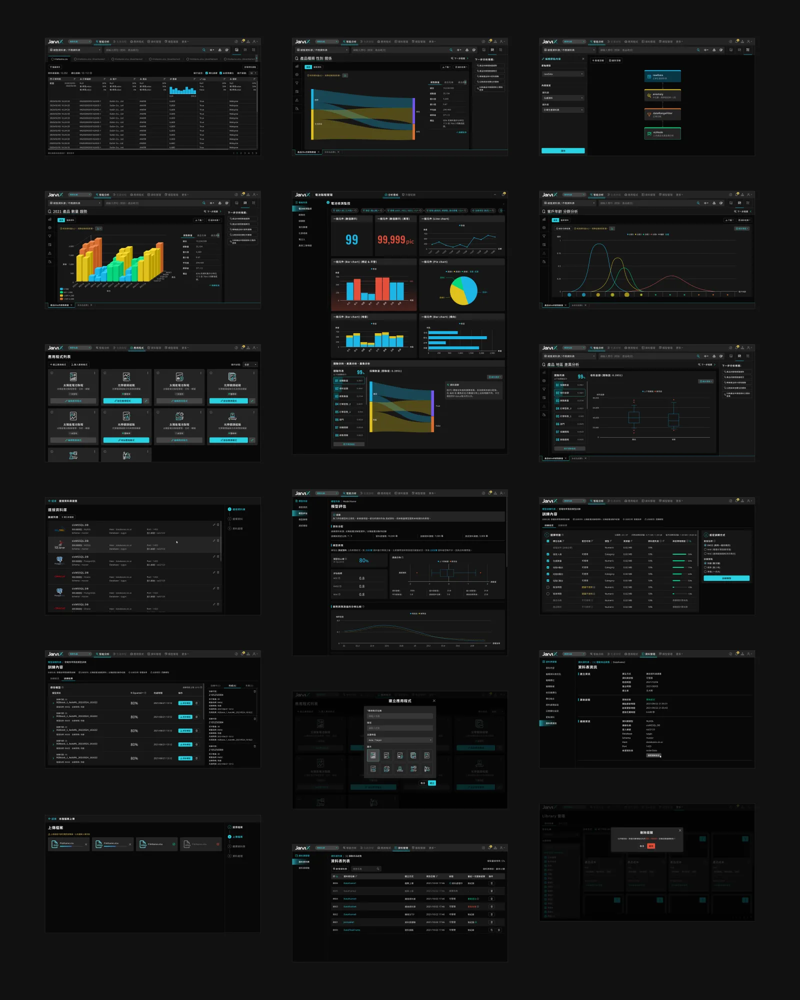

10+ 年UI / UX 設計經驗
40間托育機構使用托幼加
2–3人曾帶領的設計團隊
8個完整作品案例
01.
精選作品

好學教育｜2023 – 2026
托幼加：讓 40 間托育機構的每個角色，只看到自己需要的
托育 SaaS 平台 1.0 → 2.0 改版。重新梳理系統管理員、校方、老師、家長等多層角色，依角色拆分介面與權限。
看案例
Synergies｜2019 – 2023
JarviX 使用體驗優化：降低智能分析上手門檻，讓數據分析更上手
智能分析功能的使用率偏低。透過問卷與使用者訪談找出痛點，從架構層級、新手引導、分析推薦到操作便捷度全面優化。
看案例
Synergies｜2019 – 2023
JarviX 介面改版：介面除舊佈新，提升可管理性
重新盤點統整網站資訊架構，透過 Design System 提升 UI 的一致性，並提升頁面佈局的擴充性、適切度。
看案例更多作品

02.
我如何工作
介面設計需分析繁雜資訊，而不僅設計視覺。我精通邏輯梳理、迅速找出重點，延伸融入生活經驗，取得共鳴。
- 01
暸解與同理
暸解實際情況與需求背後動機，確認期待目標。
- 02
發想與策劃
腦袋風暴、歸納統整資訊、規劃流程與細節。
- 03
測試與溝通
用簡易的原型測試，快速迭代想法。
- 04
設計與執行
實作完整的設計內容。
- 定義問題
- 使用流程規劃
- 邏輯思考
- 設計策略
- 交互設計
- 設計系統
- 視覺設計
- 資訊架構
- 網頁前端（HTML / CSS）
03.
經歷
從網頁設計走到產品設計，近年專注 B2B SaaS 的 UI / UX。
- UI / UX Designer｜好學教育托育 SaaS「托幼加」Web 與小程序設計，團隊唯一設計師
- Senior UX Designer｜Trend Micro跨多應用服務的 E2E 使用者流程、線框圖與原型
- UI / UX Designer｜SynergiesJarviX 數據分析平台產品設計、建立 Design System、擔任設計部門主管
- Instructor｜Reborn AcademyUI / UX 設計課程講師
- UI / UX Designer｜區塊科技區塊鏈數位存證產品設計
- Web Designer｜福泰旅行社旅遊電商網站、訂單與產品管理系統